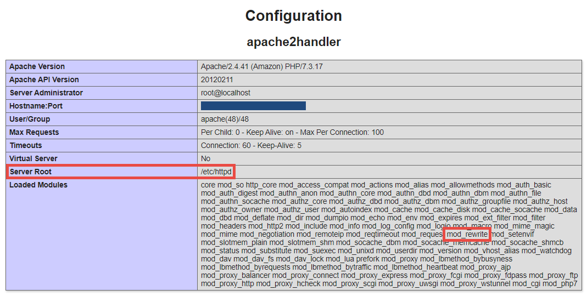

System Requirements
Kora requires a server environment deployed with what is often referred to as a LAMP Stack. LAMP stands for:
- Linux Operating System
- Apache Version 2.0
- MySQL Version 5.7.20
- PHP Version 7.1.3
Oftentimes, the server environment will rely on minor variations of these. For instance, the httpd (or Hypertext Transfer Protocol Daemon) version of Apache 2 is often used.
Use whichever installer is available for your Linux-based environment to install — or confirm installation of — the most recent versions of these basic applications in your Linux server environment. Common installers are apt (Advanced Package Tool) and yum (Yellowdog Updater, Modifier).
PHP Packages
After confirming the environment is a LAMP Stack with the appropriate version levels for MySQL and PHP, it will be important to install several additional PHP packages. These are:
| php-common | php-mysql | php-xml |
| php-xmlrpc | php-curl | php-gd |
| php-imagick | php-cli | php-dev |
| php-imap | php-mbstring | php-opcache |
| php-soap | php-zip | php-intl |
Install the versions of these packages that correspond to the version of PHP you have installed as a part of your LAMP Stack.
Enabling mod_rewrite
Kora uses an Apache module called mod_rewrite to manage internet browser navigation within a Kora installation, via the ".htaccess" file inside the "public" directory. Different servers handle enabling and disabling mod_rewrite in different ways, so it will be important for you to find out how this is managed with your specific circumstance and then confirm that mod_rewrite is enabled for the domain where Kora is accessed.
This sometimes requires finding the ".conf" file for your version of Apache, which contains the overarching permissions for, among many modules, mod_rewrite. Determining where this ".conf" file is saved is sometimes possible by temporarily creating a webpage on your domain that provides a full readout of your PHP configuration.
-
Create a file named "server-readout.php" in the root directory for your domain; this is often named "html", "public", or "www". Further, it is often also the inner-most of these directories; this means, if the directory "www" exists, but inside this is a subdirectory named "html", the root directory is most likely "html".
Inside the created file, put the single line:
<?php phpinfo(); ?>To do this via an SSH Terminal connection instead, navigate to the domain root (again, often named "html", or "public", or "www") and then use the following command to create this file with the same contents:
echo "<?php phpinfo(); ?>" > server-readout.php -
Once created, you can navigate to this file in your brower: http(s)://your.domain.name/server-readout.php.
This page has a ton of sensitive information, so you should not leave it up for long. It has a banner similar to this at the top:

Scrolling down to the section called "apache2handler" or similar, you will find the apache root directory — which will contain the relevant ".conf" file — as well as confirmation that
mod_rewriteis loaded generally as a module, as noted in this screenshot:
-
If the
mod_rewritemodule is not loaded, use the version of apache your environment is running to search for case specific instructions on how to load it. For instance, for an environment using a generic version of apache, you might run the following commands one at a time:sudo a2enmod rewritesudo service apache2 restartEach of these commands uses
sudo, which tells the linux system to run the command as a super user (it's an acronym for "super user do"). It is necessary to also restart apache, in order for the change to take effect. -
To ensure your ".conf" file is properly configured to allow
mod_rewriteto function properly in ".htaccess" files, you will next need to navigate to the aforementioned apache root directory. Inside you will find a directory, likely named either "httpd" or "apache"; inside of this directory will be the relevant ".conf" file. In the case of an environment using "httpd", this file will be named "httpd.conf". -
Edit this file. If using SSH or Terminal, open the file for editing by using the
nanotext editor that comes built in:sudo nano httpd.confand scroll through, looking for a section that looks something similar to:
<Directory "/var/www/html"> AllowOverride None # Allow open access: Require all granted </Directory>In this case, the root directory fo this domain is inside "html", which is inside "www", which is itself inside "var", so in this example the relevant code in the .conf file is for
/var/www/html. In other cases the relevant code will correspond to some other directory. In this example, note howAllowOverrideis set toNone; to allowmod_rewriteto work properly, changeAllowOverride NonetoAllowOverride All:<Directory "/var/www/html"> AllowOverride All # Allow open access: Require all granted </Directory> -
Save this change; if using SSH or Terminal, do this by exiting with the key combination "ctrl + x", and then hitting "y" to agree to saving the file. It will ask for the file name to be saved, but default to the file's current name, which is what you'll want. Hit "enter" to save and exit nano.
-
After adjusting this file, restart your apache. Once again, if yours is the generic version, use:
sudo service apache2 restart
Once finished, mod_overwrite will be enabled for your root directory.
Important: Remember to delete the .php page you created, containing your server information. This can be done via SSH or Terminal, when located in its directory, with the command:
rm [filename]
HTTPS and SSL Certificate
Kora requires the HTTPS protocol to be enabled for the domain in which it is accessible, which requires an SSL certificate. For some server environments, the included interface — such as cPanel — will have a section for managing the process of enabling HTTPS and acquiring/associating an SSL certificate as a part of that process. Sometimes — such as with MSU's Domains of One's Own accounts and their corresponding cPanel — the SSL certificate and its renewal are handled behind-the-scenes, so to speak, and the certificate is acquired/associated when the HTTPS protocol option is enabled.
In other instances, it will be necessary to apply for an SSL certificate. This can be done in a number of ways, but the one most commonly used as a cost-free method is through a server application called Certbot, which manages the application, acquisition, and association of an SSL certificate from a free certificate supplier called Let's Encrypt. Certbot is a great option for those who need to go this route because it can also be configured to handle automatic certification renewals, since SSL certificates expire. One possible way to install certbot into your server environment is from Certbot directly, and then to provide "Execute" permissions.
wget https://dl.eff.org/certbot-auto
chmod a+x certbot-auto
The specifics of using certbot will depend upon your domain, email address, etc. so it wouldn't be possible to provide a guide here. Certbot provides some more-granular instructions for use on their "Instructions" page, which should be enough to get the SSL certificate needed.
Google reCAPTCHA
Kora requires integration with Google's reCAPTCHA verification service. Instructions for how to implement this can be found in the Reclaim Hosting/Domain of One's Own installation guide.
Kora Email
Kora requires a Simple Mail transfer Protocol (SMTP) email server for sending emails related to new user sign-ups, invitations, or lost passwords. In some cases, the email server will be handled by some part of the included interface — including in many cPanel-based interfaces — but in others the email server may be managed via the SSH connection to the environment. When configuring Kora's email settings, it is possible to use an SMTP server on another domain, by providing the appropriate domain name for the server for "Mail Host," appropriate user email address from that server for "Mail User," and the email address's password in "Mail Password." Please see Step 5 of "Set Up Server Email and Link It to Kora." Additionally, if the "Mail User" and "Mail From Address" do not match, the recipient's mail client is more likely to flag the generated email as spam.
In the case of MSU's Domains of one's Own, emails have been entirely disabled to comply with a univeristy-wide policy. If you are unable to set up an SMTP server to use with your Kora installation — such as on another, privately-managed domain — you will need to manage user creation and password resets manually. To do this, please consult the guide for manually managing Kora user accounts.